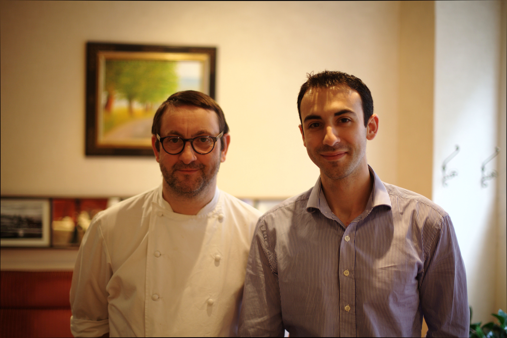
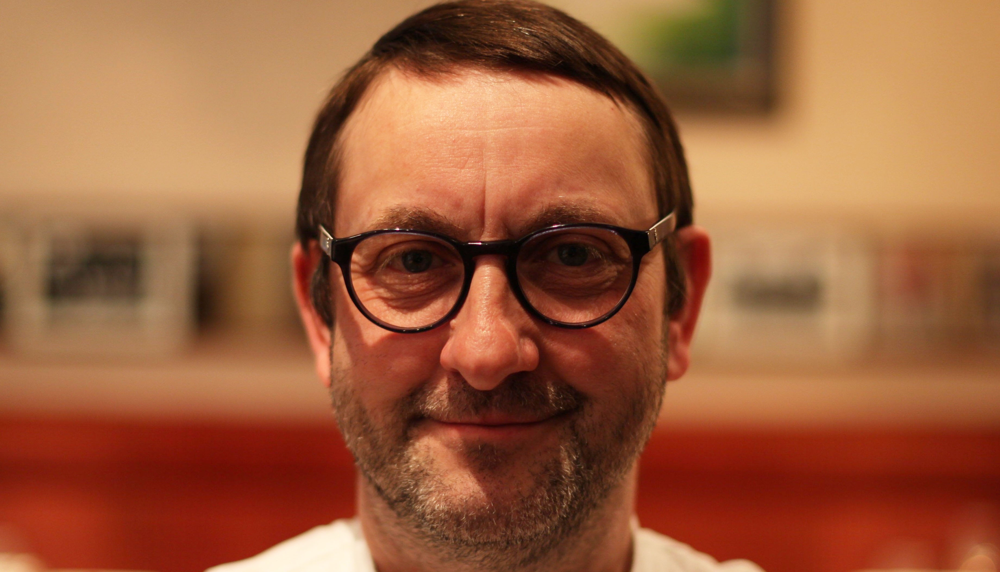
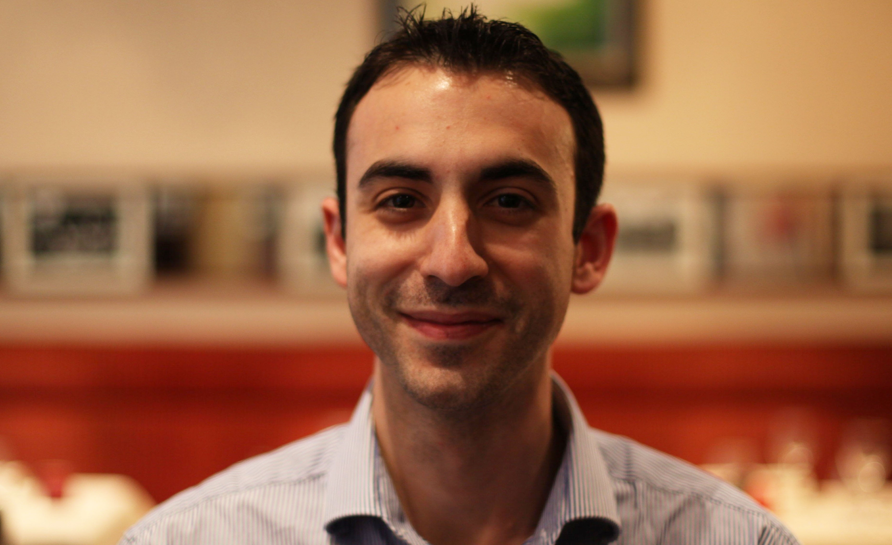
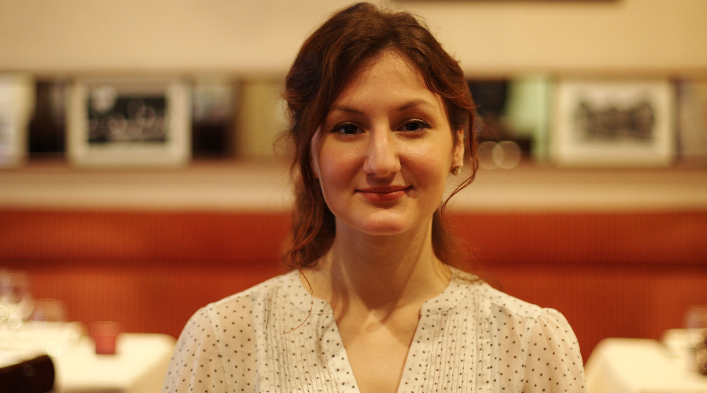

L'Equipe

Jérémy, à droite sur la photo, fut le premier apprenti de Philippe à l'ouverture du restaurant en Octobre 2001. Il est revenu rejoindre l'équipe début 2016 en tant que responsable de salle et associé.
La Brigade En Cuisine

Philippe
Le Chef et gérant Philippe Marquis, après 15 années aux commandes des fourneaux de la Ferme Saint Simon, s’est installé rue de Vaugirard pour continuer à vous régaler. Maitre restaurateur depuis 2014, sa cuisine du terroir vous enchantera.

Jérémy
Jérémy Figues, premier apprenti en cuisine à l’ouverture du restaurant a rejoint l’équipe début 2016 en tant que responsable de salle et associé.

Jessica
Jessica vient compléter l’équipe le samedi soir.